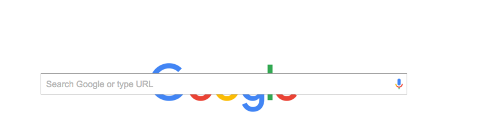

Margins, Borders and Padding
Making sense of CSS positioning concepts
by Becky Lehmann
October 18, 2015
Overview
If you're just starting off your HTML and CSS journey, you may have experienced a blunder or two when trying to move various HTML elements across your webpage. No worries, it's easy to get caught up in the mess of CSS positioning terminology - float, z-indexes...what is positioning type, again? A good place to start the CSS journey is to understand the difference between three key styling aspects: margins, borders and padding. Let's review each, one at a time.
Before we take a deeper dive, it might help to put a visual to the three concepts I'll be discussing. Use this as a reference throughout the article:

Margins
As indicated in the visual above, the margin represents the space surrounding the HTML element. You can adjust margins to move any given element relative to other elements or to the "walls" of the webpage. Let's take the example of the Google logo. Here is a picture of the orignal logo, no changes made to the margins:
Theoretically, if I change the margins of the logo, I should be able to move the image vertically or horizontally across the page. Creating a negative margin will "remove" space. Let's see what happens when I specify a margin-top: -80px for the logo. This should "remove" 80px of space between the logo and the top of the page.
Yes! As you can see, the logo has moved upward on the page. Now let's try the reverse, increasing the margin with a positive value. If I specify a margin-top: 100px, I should see the logo move down on the page.

As you can see, the logo is now "hiding" behind the search bar. So again, you can change the margin to move an element relative to other elements or to the sides of the page. You can do this by specifying margin-top, margin-right, margin-bottom, or margin-left values, or by defining all at once with margin: (top) (right) (bottom) (left). Adding one value for margin will apply the value to all sides.
Border
Now let's review borders. The border is essentially the outline of the HTML element. Using the Google logo again as an example, I've highlighted the border using black coloring:

I can edit the style, color and thickness of the border using the border property. For example, I could specify border: dashed teal 10px, as I have done in the image below:

The border is not always visible to the user, as we can see with the original Google logo (without the highlighted border). It can be helpful to view the border in order to understand how much space the element is "taking up."
Padding
Finally, we get to padding. Padding is the space between the content of an element and its border. We can see the default setting for the Google logo has a padding-top: 112px, which creates space between the content and the top border of the image. You can see this again in the image below with the highlighted black border:
So what happens if I specify padding: 40px? It should apply "space" of 40px to all sides of the content, between the outside borders. I've shown this below:

As you can see, this not only creating even spacing between the content and the border, but it actually moved where the Google logo itself falls on the page.
Summary
So we've reviewd margins, borders and padding and how each can help you to manipulate HTML elements to create a different layout and styling in CSS. CSS can be a bit confusing at times, so it always helps to reference back to the "overview" image I included at the beginning of the article. Remember, these things take a lot of practice and some "playing around" before they become intuitive. Best of luck on your CSS journey!